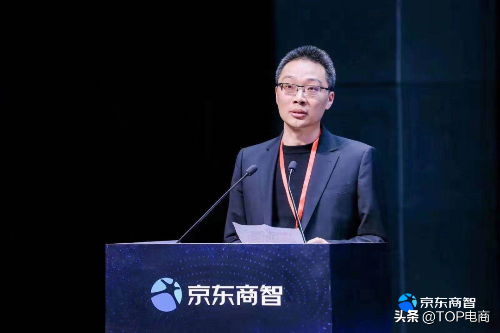
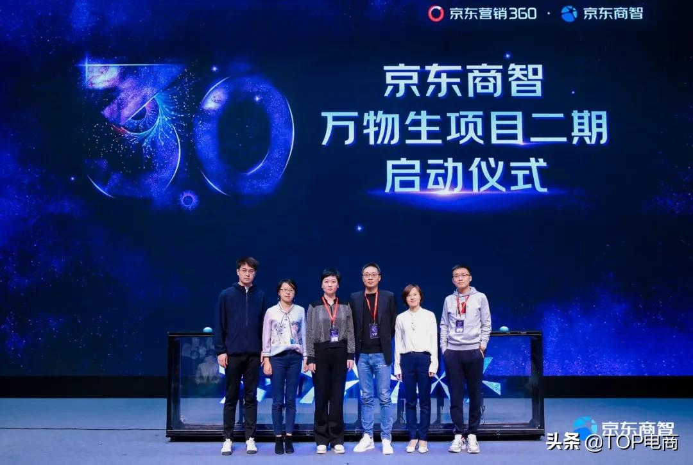
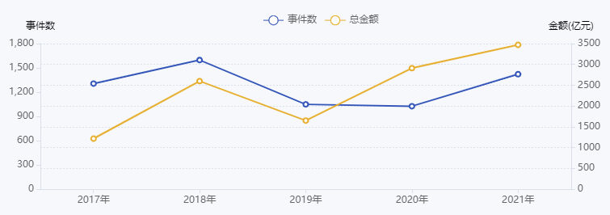
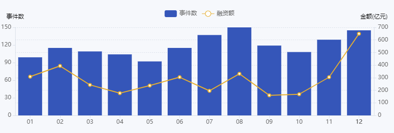
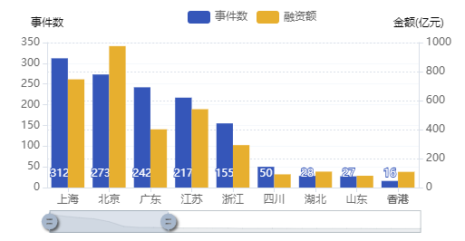

你好，欢迎登录康洲数智官网！
 咨询电话：
400-805-6906
咨询电话：
400-805-6906
 4122
4122厂区5G网络全覆盖，“5G+AR”让设备运维跨越“千里之遥”；工业机器人挥动手臂协同作业，智能小车穿梭运输物料；监控大屏实时显示各项数据，“车间大脑”自主决策生产时序……这是重庆渝江压铸有限公司“智慧工厂”的代表性生产场景，科技感满满的背后，更带来质效提升。
“得益于数字化转型，我们的生产效率大幅提高，有力对冲了原材料涨价等不利因素，企业发展逆势上扬。”渝江压铸相关负责人说。
工业是重庆经济的鲜明底色，近年来，随着要素成本攀升，一些工业企业面临较大的生产经营压力。今年以来，一些原材料价格仍高位运行，成本压力之下，重庆不少工业企业加速迈出数字化步伐，以推动精益生产，实现降成本、提效益。重庆市经信委数据显示，2022年重庆将实施1250个智能化改造项目，新增1.5万户企业“上云”。
一些企业全面布局数字化转型，提质增效成果加快显现。“随着高端制造兴起，下游客户提出了生产过程信息化监管和质量追溯要求，倒逼我们全面实施数字化转型。”重庆歇马机械曲轴有限公司常务副总经理曹欣蔚说，该公司连续投入大量资金用于智能化改造，部署了8项信息化系统，生产效率提高30%以上，产品不良率降低一半。
缺资金，是制约中小企业实施转型的一大掣肘。今年以来，一批重庆工业企业探索“小步快走”，聚焦生产经营中若干痛点，以场景为牵引，小投入精准“给药”，带来良好的效益。
在重庆金猫纺织器材有限公司仓库，过去“笔记手抄”的传统管理方式，提升为信息化操作，效率大大提升。“我们的产品品类达上千种，仓储管理千头万绪，人员疲惫不堪，还易出错。投入十几万元完成数字化升级后，彻底解决了这一难题。”该公司常务副总经理周世华说，根据公司财力状况，未来还将在生产过程及客户关系管理等方面逐一进行数字化升级。
依托数字化，带来的变化还不止于企业内部：在贯通企业内部数据的同时，更可联通上下游两端，有力提升产业链数字化协同水平。
重庆青山工业有限责任公司深耕汽车变速器领域，通过实施数字化转型，上线供应链协同平台后，有效带动140余家供应商加快迈向数字化。“以前供应商对接主要靠表格表单，现在技术图纸直接就可传输到供应商生产线上，效率大大提升。”该公司副总经理叶万华表示，今年还将丰富供应链“上云”内容，通过与银行合作，为“链上”企业提供更多供应链金融支持。
记者采访了解到，今年以来，像青山工业这样，由产业链龙头企业带动链上企业数字化转型的情况多了起来。“通过加强产业链数据共享，提高上下游企业协同水平，实施产业链‘抱团’数字化转型，正成为重庆推动工业企业发展的重要路径。”重庆市经信委相关负责人说。
这名负责人表示，为此，今年重庆还将支持一批“链主”企业、重点企业建设工业互联网平台，将实现“行业生态一条链、数据协同一张网、应用服务一平台”，解决产业链企业间的信息数据孤岛、协作效率低等痛点。
27982021年，浙江省开启数字化改革征程，“浙里防疫”“七张问题清单”“浙江外卖在线”、药品安全智慧监管“黑匣子”应用等一批数字化应用上线，以“事项”为切入口，力争打破过去各部门、各单位条块分割、条线孤立的碎片化模式，实现从事后应对处置向事前有效防范，从碎片化管理向全周期管理，从模糊治理向精准治理的转变。将数字化改革经验运用到医疗器械监管工作中，以适应医疗器械产业的迅猛发展形势，满足日益严格的医疗器械法规要求，提升监管能力，是监管部门需要研究的一项重要课题。
□余晓芬
数字化改革是监管和产业发展需要
数字化改革是提升医疗器械监管工作现代化水平的重要路径，也是适应监管和产业发展的需要。
数字化改革是适应监管任务的需要。近年来，医疗器械产业快速发展。以浙江省为例，2019年底至2021年底，全省注册、备案产品总数从11793个增加至17812个，增长51.04%；医疗器械生产许可、备案企业从1340家增加至2130家，增长58.96%；医疗器械经营许可、备案企业从44000家增加至66010家，增长50.02%。伴随医疗器械产业的发展，行业监管任务持续加重；但医疗器械监管队伍人员数量无明显增长，监管任务与监管力量不匹配，需要探索通过数字化改革提高监管工作靶向性，以“非现场”的智能化监管手段辅助并逐步替代传统监管方式，推动整体监管水平提升。
数字化改革是贯彻医疗器械注册人制度要求的需要。医疗器械注册人制度是新修订《医疗器械监督管理条例》的重要变化之一，该制度鼓励创新，促进生产要素优化配置，但跨区域委托生产给协同监管带来挑战。一是监管信息及时共享难。由于缺乏统一的监管信息互通平台，监管信息共享不及时，日常监管中面临对企业产品注册或生产许可更新情况、监督抽检、监督检查等信息不及时掌握的实际困难，易产生重复检查、监管盲点、监管靶向性不强等问题。二是监管信息利用难。当前，注册人所在地药品监管部门和受托生产企业所在地药品监管部门借助联合检查、委托检查等方式建立跨区域监管联动机制，其检查结果以纸质或电子形式实现信息互通，但相关数据未实现格式化，统计分析耗时费力。三是监管资源互补难。医疗器械监管力量不均衡，服务企业能力、效率有较大差异，且近两年受限于新冠肺炎疫情防控、地理交通、人员配置等因素，监管资源难以实现优势互补。面对新法规带来的新挑战，应探索监管新方法、新工具，以数字化手段跨越时空限制，提升监管效率。
数字化改革是应对医疗器械产业发展新兴业态的需要。随着现代化工业制造和电子商务产业的快速发展，信息化、数字化变革已深入医疗器械产业发展洪流之中。近年来，一批医疗器械未来工厂正在孕育。部分规模较大的医疗器械生产企业通过购买或自建自动化生产线提升产能，通过企业资源计划系统（ERP）等信息化系统实现对生产过程的管理和监控；一些实力强、具备数字化理念的医疗器械生产企业已着手建设“无人工厂”。医疗器械产业转型加速，传统查阅纸质原始记录的监管方式将难以实现有效监管。同时，医疗器械网络销售蓬勃发展，网络销售企业和电商平台数量逐年增加，网络销售产品如出现质量问题，易在短时间内造成较大影响；而电商平台开展网销企业审核工作时，由于审批备案数据互通范围、时效等问题，难以精准开展比对审核工作。网络销售具有虚拟性、跨地域性、隐匿性、易转移性等特点，部分网络销售企业出现无证经营、注册地址与经营地址不一致等问题时，平台事后关闭店铺，给监管部门带来调查取证、证据线索固定等难题。
数字化改革是贯通监管工作信息孤岛的需要。医疗器械注册、生产许可、经营许可、不良事件监测、监督抽检等已建立信息化业务系统，可以较好完成条线监管工作，但是在信息关联互通上仍有不足。例如，第一类医疗器械产品备案、第三类医疗器械产品注册、不良事件监测、国家监督抽检等使用国家药监局信息化系统，第二类医疗器械产品注册、生产许可备案等使用省级药监局信息化系统，系统之间未实现实时数据互通。此外，监督检查、召回管理、使用单位监管等仍基本采用线下管理方式，未形成覆盖产品全生命周期的信息化系统。
积极通过数字化改革推动管理制度重塑
面对上述情况，建议监管部门积极探索数字化管理方式，进一步提升监管能力。
首先，监管部门需要树立数字化管理理念。随着医疗器械产业的发展和监管要求的提高，监管部门需要以更前瞻的视角、更广阔的视野，打破传统管理思维，树立数字化管理理念。医疗器械监管数字化改革要聚焦群众安全用械和医疗器械产业高质量发展需求，以解决监管难点、堵点为切入口，收集、监测和分析监管对象监管信息；借助数字化应用，突破时空和算力约束，通过远程视频检查、系统智能手段等提升监管精准有效性。
其次，建议监管部门以数字化理念完善医疗器械监管规章制度体系。国务院办公厅印发的《关于全面加强药品监管能力建设的实施意见》提出，“加强药品、医疗器械和化妆品监管大数据应用，提升从实验室到终端用户全生命周期数据汇集、关联融通、风险研判、信息共享等能力”“强化药品、医疗器械和化妆品品种档案建设与应用，加强政府部门和行业组织、企业、第三方平台等有关数据开发利用，研究探索基于大数据的关键共性技术与应用，推进监管和产业数字化升级”；新修订《医疗器械监督管理条例》明确，“国家加强医疗器械监督管理信息化建设”，但没有规定如何推进监管数字化升级。建议以新修订《医疗器械监督管理条例》配套规章制度制修订为契机，将数字化管理理念融入医疗器械法规体系中，为改革创新提供支持。
再次，监管部门要积极开展医疗器械监管数字化改革探索。一是迭代优化已有信息化管理系统，整合原有功能单一的业务管理系统，升级为综合监督管理平台，实现跨层级、跨部门协同管理。二是支持医疗器械监管数字化应用试点。支持各级药监部门结合实际，选择一些领域、区域开展数字化试点，给予政策空间，允许先行先试，积累经验。三是支持企业数字化转型。部分企业具有较强信息化实力和较高水平，有意愿进行数字化转型，对于这些企业，建议监管部门予以支持和鼓励，推动形成行业示范效应。四是期待国家药监局组织开展相关监管科学课题研究。总结基层数字化改革的实践成果，并将其提升至理论成果、制度成果。数字化改革需要顶层设计，立足全局，基于企业资源、管理水平分阶段推进，只有这样才能真正达到数字化管理效果。
（作者单位：浙江省药监局）
2759京东商智3.0“万物生”全面升级，加速商家营销数智化转型
随着数据实时性、准确性与全面性的提升，数据的应用正在实现从营销工具到决策的角色转变。3月31日商智上线四周年之际，“万物生 致增长”京东商智3.0全面升级上线发布会在北京举办，“万物生”项目二期正式启动，标志着京东商智从数据工具，升级为数据决策中心，让数据应用开放创新，启发更多商家的营销想象力。
活动现场京东集团副总裁、京东零售市场营销与商业化中心负责人邵京平表示，京东商智“万物生”项目从上线开始，通过更智能、便捷的产品迭代，帮助品牌商家有效建立了数据化运营思维。今年全面升级后的京东商智3.0，在关注产品能力的升级的基础上，将更聚焦整体服务能力的升级及数据技术能力的对外赋能，更好地满足不同类型品牌商家的多样化数据需求，以数智化手段帮助品牌商家实现真正意义上的“高质量”增长。

数据决策：商家运营提质增效
数据的实时获取和深度洞察是电商营销的关键，京东商智“万物生”项目致力于为电商全链路营销提供数据支撑，助力商家诊断推荐更智能、业务数据更全面、体验交互更高效、营销运营更落地。经过不断的积累和升级，京东商智数据指标达到600+，行业指标突破100+，已覆盖京东近8成商家。截止2020年底，商智在90%以上的天数中能保证各项数据在上午8点前完成更新，基于数据的更新时效和丰富程度，近9成用户正在使用京东商智助力生意增长。
2020年虽取得了不错的成绩，但京东商智的脚步远不止于此。现场“万物生”项目二期正式启动，在帮助品牌商家运营从数字化迈入数智化时代的进程中，京东商智将搭建更加立体的平台和创新的服务模式，成为品牌商家运营的数据决策中心，推进数智化转型，为运营提质增效。

启动仪式后，京东零售技术与数据中心数据产品平台负责人武磊为大家分享了京东商智2021年产品战略方向。在平台化升级层面，全面布局数据诊断能力，通过分诊平台、诊断规则引擎、提升策略、效果评估等方面持续反馈并优化数据，同时快速响应新业务，为京东多元业务提供数据支持，依托京东数坊产品，升级4A消费者营销模型，更贴合广大商家的用户资产运营思路，打通广告投放、营销工具等多样化的提升策略手段以及效果数据，为商家带来消费者资产的最大化价值。
在服务模式创新层面，京东商智一方面开放数据生态，打造商智开放数据生态联合实验室，提供“开放平台”，借助商智公共域，支持开发者数据算法能力输入赋能商家，同时联合商智数据服务平台，运营工具可视化输出，助力商家数营一体，实现千店千面，又可将效果数据实时回流，以数驱动，协同赋能上下游伙伴。另一方面持续深耕定制化行业报告，满足品牌/商家对特定行业、特定维度类目的深入理解，从而找到新人群、新渠道、新场景，保障营销活动的低成本运作和高效执行。
数据掘金：探索电商增长之道
在竞争日益白热化的电商环境中，每个企业都经历着不同的“阵痛期”，面临各种生存和发展困境，迫切希望寻找利用商业智能获得竞争优势的方法。此次发布会上邀请了金鼠标数字营销大赛/TMA移动营销大奖联合创办人、执行主席方立军，中国惠普大中华区媒介负责人毛亚莉，京东零售商业提升事业部广告销售及运营负责人于雯，京东零售市场营销部东联业务部负责人刘婷婷，广州市汇尚电子商务有限公司副总裁高克宁一起探讨如何通过数据掘金，找到电商增长的制胜之道。
纵观中国的媒体环境和数字生态，数据使用依旧存在一定的挑战和壁垒，毛亚莉表示，品牌对数据分析的要求越来越高，包括从基础的洞察到支持品牌制定营销策略方向，期望在商智开放的数据平台帮助下，将数据有效串联，助力品牌更好服务消费者。
单纯依靠基于直觉、经验驱动的营销决策是不理智的，于雯认为，营销未动，数据先行，数据首先要具备三点：能用、好用、易用，才能以更鲜活的营销生命力和对数据的深度解读能力，最终为品牌商提供定制化的智能营销解决方案。
营销离不开对人的深度洞察，刘婷婷现场提到，商家与客户之间建立信任和连接是长线过程，京东将更深度地帮助商家深挖消费者内心的想法，将大数据和小数据融合，实现品牌与用户的高效沟通，从而让电商营销“掘地三尺有黄金”。
作为服务商，高克宁表示，一个开放的平台才能实现多方共赢，数据的应用涉及到商家运营的方方面面，希望与京东商智一起赋能商家更多新的营销策略工具和方向，实现高速增长。
从数字化迈入数智化，数据的智能化应用逐渐成为商家运营店铺不可或缺的一部分，京东商智将积极与品牌商家一起携手，用数据启发想象力，为全行业的营销数智化转型提质增效，以更具前瞻性的数据洞察和决策，为消费者与品牌商创造更大的价值。
1753无限供给，新经济的分水岭
什么是无限供给？ 以前的生产要素主要指土地、资本、劳动力。2020年4月9号党中央国务院发文，提出了完善生产要素市场，在这三个传统要素基础上加了技术和数据。
传统的生产要素和技术、数据的本质区别在于： 传统的生产要素在生产过程当中会不断被损耗、折旧； 而技术、数据一旦产生就永远存在，就可以长期重复使用，没有损耗，没有折旧，是从0到1到无穷大的过程，这就是要素的无限供给。 因为无限供给，所以这些要素在转换成产品的过程中是没有成本的。 比如微软的Office软件，一旦出了某个版本，永远不会供不应求（供应不能满足需求），当然也不会供过于求（没有过剩的概念）。 同样，微信、抖音等APP只要研发出来，一旦有了算法并且转化成产品，再多人下载，公司都能够供应得上。
这和传统时代的汽车、房子、面包、牛奶的有限供给，形成了根本区别。这对传统经济思维是一种颠覆。 因为具有这种无限的特征，所以企业在产品定价、商业模式设计、竞争策略和企业增长方面，会发生翻天覆地的变化。 无限供给，势必会带来两个趋势，对于企业将带来重要影响。
第一，资产无形化。
有限供给下，产品生产企业的规模取决于产能，而新经济企业提供无限供给产品，生产企业的规模取决于用户多少。 无限供给的供应量可以大到无穷，没有产能上限和产能边界。因此，无限品生产企业的成长通常不需要伴随厂房、设备等固定资产的大量增加。 成功的新经济类企业，特别是数字经济企业，一般拥有大量的无形资产。以无形资产为主，会成为未来新经济发展的重要部分，这对于企业融资会带来根本性的变化。
第二，用户资产化。
在有限供给品领域，客户常常是跟供应商做一次性交易，而新经济企业和用户是相互的长期关系。 一个典型的例子是，用户在使用微信或抖音APP时，不断地给供应商创造各种各样的价值、收入。流量变现就是企业用客户去变现、赚钱。 无限供给品的增长规模效应主要体现在客户端，客户具有非常典型的资产特征，所以叫做客户资产化。
这将商业的核心，从生产为王带向客户为王。
无限供给产品企业如何实现增长
对于任何一种无限供给产品，企业只要有能力生产一件，就可以快速且几乎无成本地复制任何其想要的数量。 因此，供给端不再是制约企业增长的瓶颈，决定企业规模和增长速度的核心因素由供给端彻底转向，落在了需求端。 也就是说，企业成长所依靠的不再是产能的扩大，而是用户的增长。这是对传统理论的一个根本颠覆。
当然，这并不是说供应端变得无足轻重，需求端变得非常旺盛，在一定程度上取决于企业在供应端能否开发出一种或数种性能优越、对用户有足够吸引力的产品。 区分软件公司、互联网公司、大数据服务类公司，以及大公司和小公司的主要依据，就是客户数量，以及客户人均贡献的价值。
既然用户规模（即用户人均贡献价值）是决定企业规模和价值的关键因素，吸引更多用户，实现用户数量和销售收入（包括衍生收益）的快速增长，是所有无限供给产品供应商的强烈愿望。那么如何才能做到这一点呢？
产品质量、性能、性价比、用户友好度至关重要。
了解目标用户，这是很关键的一步。
为客户画像，了解他们的兴趣、需要、年龄、职业、圈层等特点。 如果了解用户，就会清楚他们对什么感兴趣，有什么问题困扰他们，并依此提供更受用户欢迎的产品，赢得用户的信任和依赖。
做好品牌。
互联网时代，企业宣传推广的渠道和方法越来越丰富，除了传统的广告宣传外，社交平台、视频网站、付费引流等都是强化品牌，以及获取用户的重要手段。 传统企业会投入大量资金在设备和原材料上，无限供给产品企业则投入大量资金在研发和推广上。
口碑营销，或称自传播效应。
用户将产品推荐给朋友、同事、网友等，这样一传十、十传百，促使产品新用户呈几何级增加。口碑营销在产品推广中早期的作用尤为显著。
嫁接新的应用，扩张衍生收益渠道。
任何一款产品，目标市场再大，潜在用户再多，也有接近饱和的时候，不可能无限制地长期高速增长下去。 为了保持持续增长势头，企业需要不断拓展边界，要么开发新的产品，要么在原有产品上添加新的功能、嫁接更多的收益渠道，以获取更多的衍生收益。
这正是无限供给产品的奇妙之处，是无限供给产品和有限供给产品的根本区别。 对于传统的有限供给产品而言，不管市场需求多么旺盛，产能的扩张都必须循序渐进，其间需要大量物力和人力投入，不可能一蹴而就。 无限供给产品没有产能方面的制约，可以迅速满足海量需求，才有了裂变式增长的可能和机会。
跨界经营和打造生态圈
无限供给产品的多功能性以及用户(流量)资产的可变现性，使得跨界经营成为数字经济、互联网经济的一大特点。 为什么呢？
一是因为优秀的无限供给产品开发企业，摆脱了传统经济时代产能问题的制约，短短数年就可以获取接近饱和的海量用户。 而此时，如果单靠一款产品，很难实现持续增长，有必要选择新的增长点；
二是跨界经营可以让企业对用户价值进行更深度的挖掘。 必须强调的是，企业跨界经营或多元化经营必须建立在企业拥有的技术、产品、用户资源等核心竞争优势的基础之上。
在几乎一切都讲“互联互通”的新经济时代，一个企业要脱颖而出，并长期维持笑傲江湖的优势地位，靠一己之力单打独斗几乎是行不通的。 企业要发展，离不开众多供应商、服务商、物流企业、合作机构、协作单位、渠道商、服务对象和用户群等。
企业和这些机构互相联通、分工合作，这些机构与机构之间又互相连接合作，形成一个相互交织、利益攸关的系统，就是所谓的企业生态圈。 一个企业的竞争优势，不再单纯依靠自身的产品和技术，还要依托整个生态圈的资源和实力。 企业要借助互联网的优势吸收各种资源，并加以充分利用，做到世界就是我的人力资源部，世界就是我的研发部，把企业从原来封闭的体系变成互联网的节点。
无限供给时代，企业如何应变？
在数字化、智能化不断发展的无限供给时代，企业需要认清：
第一，企业增长由供给约束转变为市场约束。这是一个根本性的变化。
第二，未来简单劳动和智慧劳动之间的差异会持续扩大。 对于所有企业而言，将来劳动力的质量远比数量重要。原来我们经常说的劳动力红利，未来可能不再举足轻重。消费者的红利、市场红利可能变得更加重要。
第三，技术、创意、IP、商业模式、大数据等智慧成本，将成为比机器设备更重要的生产要素。
企业最需要做的，就是发展你的无限供给元素。
典型的无限供给元素是技术、数据。技术只要有一份，就可以不断重复地使用，用在多件产品当中。 这里需要强调的是，无限供给并非互联网巨无霸的专利，传统行业有限品当中都有无限元素。 比如技术供应，当一项技术发明出来，产品化了，这个技术实际上可以无限使用。
无限供给对任何一个行业的影响，都是值得大家思考的。
新经济的竞争说到底是人才的竞争，是技术的竞争，也是理念和创意的竞争。无限供给品一旦产生，给你带来的收益可能是你原有投入的几十倍、几百倍、甚至上千倍。 无限供给时代，在互联网的冲击下，很多传统行业陷入被革命的焦虑。但越是忧心忡忡，越是要积极求变。 丹麦的马士基就是一个很好的例子。 因为全球贸易增长速度下降，以及越来越多的物流公司的出现，航运公司的大哥马士基感受到了压力。
经过战略分析之后，马士基从原来的运输公司变成了物流综合服务供应商：就他的角色不单单是运输，还帮客户把建构、提单、报关、转运等都做好体系化，全程追踪，提供各种各样的全自动服务。 它跟IBM合作开发了TradeLens系统，建立了新的数字化、大数据技术工具，完成了华丽的转型。 对企业来说，变局到来的时候，我们喜欢还是厌恶，其实都是无济于事的，我们只能去拥抱、去适应，找到哪些东西能为我所用。
（作者为普林斯顿大学金融学博士、长江商学院金融学教授周春生）
文章来源于网络，版权归原作者所有，如有侵权，请联系删
2555中国医疗健康行业，在深化医改，产业升级，创新加速的大背景下，越来越显示出从未有过的活力。传统药企积极创新转型，新兴biotech企业不断涌现。而作为“长青”行业，投资者也始终在寻找机会。当前无疑是国内医药企业快速发展，融资需求旺盛，投资机会遍地的黄金时代。
2021整体投资热度高涨
根据药智数据《2021年中国医药健康行业投融资分析报告》显示，截止2021年12月30日，除未披露数据外的投资总额超过3471亿元人民币，环比2020年上涨19.28%。而从融资事件总数看，2021全年达到1422件，环比2020上涨38.6%。这其中共涉及医疗健康行业1224家企业和997家投资机构。参与投资的机构数量也较2020年增加了178家
全年投融资事件和金额的时间分布如图2所示，事件数量上8月最多，其次为12月、7月，总体下半年表现突出。而在融资金额上，12月表现尤其突出，达到649.46亿元。
在地域上，2021年投融资事件分布于国内26个省市，北上广以及江苏在投融资事件数量和金额上，领先全国。其中上海在事件总数上独占鳌头，达到312件，而北京则在投资金额上领先，达到975.87亿元。
 2788数字营销是营销的一个子领域。因此，它汇集了旨在通过一个或多个数字渠道影响客户行为的所有措施。在其主要分支机构中，我们常见的有例如社群管理、在线广告、电子邮件等营销方式。
在2021这一年，数字营销正在发生根本性的变化。曾经只在科幻电影中出现的人工智能和视觉研究等技术，也更多地在数字营销当中体现。在当前互联网和ICT（信息和通信技术）爆炸式增长时，衍生出更多的数字营销手段。结果，越来越多的公司正在使用它们来优化其数字营销活动。
人工智能是迄今为止最令人兴奋的技术进步之一，它可能会在很多方面改变我们的生活，其中一些我们甚至还没有考虑到。随着人工智能技术的进步，数字营销领域可能会发生很大变化，因为它为自动化创造了很多新机会。
PPC（点击付费）广告是数字营销中非常重要的一部分，而通过PPC获得成功的最好方法就是使用自动化软件来管理广告活动。Machine Learning（机器学习）可以帮助管理竞价，与手工操作的PPC广告相比，自动化软件在某些行业的竞价广告中可以提高20%的转化率。
目前，该自动化软件使用的是较为基础的人工智能技术。随着技术的进步，人工智能能够根据用户的设备使用情况来识别情绪，所以，广告将变得比以往任何时候都更具针对性，这将导致更大的销售转化率增长。
聊天机器人是数字营销的主要组成部分之一，其核心技术基于人工智能的使用。当前，越来越多的公司正在使用聊天机器人或计划在接下来的一年内使用它。截止目前，已有超过1亿的人次曾与聊天机器人进行交互。
聊天机器人对企业有很大的帮助，大量的品牌已将聊天机器人纳入到他们的客服系统中，比如LinkedIn, 星巴克等行业领军者。聊天机器人可以帮助客户了解其产品或服务，以更高的效率辅助咨询业务，降低企业人员成本。
经过调查，对比与呼叫中心的操作员直接沟通，许多用户其实更倾向与聊天机器人进行交互，因为聊天机器人可以迅速地作出回应并给出详细的解答。因此，用户可以节省不少的时间并享受良好的服务质量。
2596
导语：“这是个信息严重超载的时代，你是谁不重要，顾客认为你是谁才重要。
出品丨数科社 作者丨柠溪
2011年，英国《经济学人》杂志曾经在经济学家中间征询过一个话题：什么是衡量中国经济发展的标准。后来，集合几名顶尖经济学家意见，《经济学人》推出一篇报道，创造性使用工业用电量为主的一套指标来评估中国的GDP水平。
这就是主流经济学界都认可的“克强指数”。
但在2018年产业互联网被腾讯创始人马化腾端出来之后，越来越多的企业意识到，利用好互联网数字化业务工具，是企业保持长久稳定发展的基础，也是衡量中国企业发展最重要的指标。
实际上，新一轮商业环境变革下，传统企业转型数字化不应只是做出跟上“数字化”的动作，而应将企业数字化，尤其是企业数智化当成是一项系统的工程。
2021年末，马化腾在知名管理学专家杨国安教授新书《数智革新》序言中提到，对于企业领导者来说，承担自身“数字化转型的责任”与推动对社会“负责任的数字化”，两者将共同为数字时代的基业长青构筑基石。
进入2022年，企业比任何一个时代都需要数智化转型带来的硬核实力提升，因为当下世界经济进入一个不稳定和不确定的乌卡时代。
而企业要想在这个时代破局，品牌是唯一可以掌握的法宝。
01丨用户品牌时代
正在如火如荼举行的冬奥会，让Lululemon（露露乐檬）这个小众的瑜伽服品牌一夜间爆火。作为加拿大代表团的服装主赞助商，单独设计的一整套羽绒服，在开幕式上使得加拿大代表团成为“最靓的仔”。
其实，Lululemon仅用两年，就在美国已经被巨头似乎完全占领的体育用品领域，因为找到了很多新女性期望能凸显自己价值的痛点，围绕经常锻炼女性瑜伽的小众人群快速崛起，产品得到大量新女性的支持和喜爱，市值十年翻十倍。
同样，在国内，依托不断研究用户心理，并把用户提出的要求落实在新产品研发之中，喜茶利用持续推出的社交化新饮品，逐渐塑造了一个“非喜茶不新颖”的消费场景，从而占据了奶茶这个市场最重要的份额。
当然，还有蔚来。这个电动汽车新兴品牌将用户体验在汽车品牌中做到了极致，不光保留了高端汽车品牌用户服务的专业性，更是打造了极致化的用户社区，甚至用户所提出的每一项要求，蔚来的客服人员都会一一跟进并给予答复。这么做的效果就是，蔚来车主的数量在增加的同时，这些车主品牌忠诚度很高。
实际上，这些新兴品牌崛起的故事说明，当下的消费者需求已经发生剧变，而这些变化正在从根本上影响市场与品牌发展的基础。

这样的局面也正在倒逼传统头部品牌转型。
比如耐克，正在想尽一切办法贴近年轻人的世界，通过DTC（直接面向消费者的营销模式）的方式直面消费者，让消费者的态度决定产品的设计。耐克向年轻化和DTC的转型，保证了连续三年战胜阿迪登顶全球市场首位；比如一直卖中草药的同仁堂，为了迎接新时代消费者的消费需求，还开设了同仁堂的咖啡馆，从养生角度向年轻人灌输中医相应理论，也为同仁堂的品牌增加了不少的亮色。
这些成功品牌的共性，在于业务新增长线都捕捉到用户的新变化，并将变化中的价值诉求作为品牌本身的追求。而在整个过程中，企业已经学会了用全维度、全链条的触点去实现新的价值。
传统营销视角中，企业关心的是市场数据的反馈、竞争对手的研究和精准客户的消费。用户这个概念是从互联网、移动互联网产品延伸而来。
互联网企业发展的核心是数字化资产，而所有的数字化资产，都是从用户的需求中衍生出来。回到用户的刚性需求，企业可以通过数据分析，一一分析用户需求的使用场景、动机、痛点，并根据这些获取的信息来开发产品和服务，以满足用户的需求。
现在越来越多新兴品牌的崛起和传统品牌转型的成功，都在以“用户视角”的转变来对待消费者。这意味着只有发掘出了用户的需求，并想方设法让用户在消费中获取到价值，才是品牌创立的根本，也才能在新的时代获取市场的先机。
在当下企业正从增量进入存量时代的背景下，深度理解“用户”才能创造新价值，才不会陷入内卷、陷入零和竞争。
02丨品牌塑造离不开数智化
根据马斯洛的人类需求层级理论，每个人的需求都分为三个层次，而品牌价值体系也可以对应分为功能需求、情感需求、价值实现三层。用户驱动的品牌，可以让用户在这几个层级的需求上，都得到满足和实现。
长期来看，由于用户品牌在不同的社会群体和不同的人生阶段，都可以满足不同层级的需求，因此就能将用户需求的满足感逐渐稳定下来，从而保证可持续的发展。而参与感、社交性、持续共创内容……等等用户品牌的手段，对于年轻的Z世代或中产新消费人群，有着不断递增的价值与意义。
这与其说是创新，还不如说是回归了品牌这一个概念的本源。因为最初的品牌就是在产品满足消费者需求的基础上，由于人文关怀和价值共鸣，使得消费者对于产品和商家标识的接受度不断增加，最终产生了口碑的传播。

中国历朝历代的商人对于字号的坚持，其实就是最传统的用户品牌理念。
当然，用户品牌背后是企业战略的一个提升，成为用户企业，要遵循的新原则是共融，共生、共创。一定程度上说，企业只有先创造用户价值，才能收获企业价值。
如今数字科技越来越成为引领未来经济的重要动力，数字化转型、智能升级也已变成众多企业的共识。
同时，对于企业获取客户以及对客户进行运营和管理，是企业经营最重要的一个组成部分。从这个角度说，如何用数字化的技术和理念推动企业营销理论和管理体系的升级，成为很多以市场目标为导向的企业特别关注的一个重点话题。
现在市场营销和企业客户管理这个层面不是没有合适的工具，例如CRM和ERP已经普及多年，但仍处于信息化阶段，尚未进入数智化阶段，缺乏从底层将这些不同细分领域应用的程序和数据打通，并通过AI与最新营销工具的加持，帮助企业实现在数字化时代轻松获客和轻松对客户进行管理的能力。
在这方面，大型互联网企业如亚马逊等已经做得非常成熟，他们一直将数字化作为管理自己企业和客户的方法论，如果没有数字化，如何驾驭这个业务多元、客户体量巨大、地域跨越全球的商业帝国？
而今天仍有诸多企业处在“农耕时代”，在客户经营方面身心俱疲，难以为继，或者因为经营不善，无法对客户的时间周期、空间移动、需求进行有效管理，客户价值流失，留客率成为商业最大的痛点。
数智化客户经营的时代，已经来临。
03丨上升到战略
亚马逊的创始人贝索斯曾经在接受媒体采访时表示，数字化转型的本质是信息技术和能力，驱动商业核心的变革。在他看来，企业数字化转型的三个关键就是建立数字化的企业战略模式与文化、掌握数字化技术能力、以及将数据视为企业的战略资本。
然而，在企业数字化普及和向更高层次升级过程中，依然存在一些误区，甚至很多企业不是死于不变，而是死于变错了。
尤其是传统实体行业，他们都知道要数字化转型，但转型到底怎么做企业往往是不清晰的。
根据2021年11月IDC发布的《2021中国中小企业数字化初始指数白皮书》数据显示，中小企业尤其是制造业企业相对于2019年，数字化认知指数最高的是数字化办公，其次是对新技术的利用。
而真正被认为是能影响企业数字化转型结果的数字管理和数据运营，中小企业与2019年的指数形势变化不大，都处于被忽视的部分。

因此，很多中小企业家，尤其是制造业企业家，现在还认为上马一个数字化管理系统，或者对于财务、客户管理等业务进行数字化，就已经完成了企业数字化转型，从而在市场中占据了优势。
这些企业家进入了一个误区，他们把数字化转型当成了企业改变自身的目的而不是途径，这就会产生认知障碍，最后影响到企业的长期发展规划。
实际上，不管是数字化还是最新的数智化转型，相关战略的推进要以企业的发展战略作为指引，以企业的经营发展价值为目标。
某种意义上讲，企业数智化是途径，本身并不是目的，真正的目的是为了企业能产生新的价值。
当下的数智化变革，对于企业来说是一个非常重大的战略转型。这不光意味着企业要购买并配备数字化的管理工具，同时还意味着企业的经营策略管理规范，乃至组织文化等等都要围绕这一个核心进行调整。
数智化客户经营，作为企业数字化变革的一个重要组成部分，也意味着企业必须要进行在市场和客户管理方面的重大战略转型。
这其中做的最好的是贝壳找房。
脱胎于链家的贝壳，一直以来给消费者的认知就是做房地产中介服务的平台。当然，贝壳也不讳言这一点，毕竟存量房其实是贝壳所有业务的基本盘。
从马老师说出那句名言“用互联网改造一切”之后，很多热血澎湃的年轻人投入创新创业的时候，都想着用互联网的思维颠覆一切传统行业。
但真正意义上的互联网对传统行业的颠覆，其实要有先决条件的。
一个行业如果信息透明度高，模板化能力强，这样的行业极易被互联网的思维所颠覆。但如果遇到一个标准化程度极低的行业，互联网的思维就在这个领域会显得步履维艰。
这一套为行业制定标准的行为才是贝壳真正的护城河。
04丨长链条更须数智化
实际上，现实中很多企业的市场决策很难，是因为链条长，消费者决策链路最为复杂，所以这些行业现在经营状态和业务发展情况出现非常大的两极分化。
而交易的低频化和消费者决策链路和整个转化点的敏感度非常高，成为企业家所关注的市场营销最显著的特征。
一般来说零售业的切入点是在营销和渠道端，如何提高品牌知名度，引起消费者对产品的兴趣，甚至对消费者种草，以及渠道的管理和后续关系的维护等等，才是零售企业特别关注的业务关键。
比如屈臣氏，很长时间屈臣氏对于会员的了解，只是一种以积分来促进他们复购的工具。但从2020年疫情发生之后，越来越多的消费者选择线上购物，这吉大动摇了线下便利店客户发展的基础。
所以，屈臣氏不得不将数字化客户运营作为自己数智化转型的切入点，以便迎接年轻人喜欢网络购物的这样一个现实。
而制造业都从供应链和产品研发开始切入，无论光伏、家电还是机械制造等等行业，企业数智化的目标都是用智能制造和实时供应链管理，达到降本增效与柔性生产的目的。
比如说美的是一个制造业，它的切入点或者需要数智化解决的痛点，就在于柔性生产、与供应商的关系、与上游的以销定产的联动等方面。

不过在互联网营销专家眼中，重度垂直行业的数字化营销可以拆成三个最核心的工作：触达提效、交易沟通，以及在互联网底层系统里做好虚拟营业点。
首先，在触达提效这件事情上真正有难度的，是如何寻找到企业潜在客户并进行有效的广告投放。说得简单一点，其实就是企业开发大数据和AI系统，在计算机理解企业准备要推广的产品和相关属性的基础上，通过以往广告投放以及相似圈层的用户数据，来为企业寻找并圈定自己的潜在客户。
其次，要搭建一整套链路产品中台，从落地页工具、粉丝运营工具到线索管理平台，能够帮助企业在拿到数据之后提升沟通效果。
第三，企业要在互联网底层建立起的虚拟营业点,尽可能的与线下的服务场景相融合。例如房产企业可以利用微信实现在线看房，预约看房，也可以在小程序和微信落地页等工具的基础上，实现从广告到沟通到业务成交的无缝连接。
某种意义上，数智化对于长链条企业是一场营销革命。
越来越多的企业围绕用户去做了营销全链路的数字化升级，在广告层面为线上线下的流量转化提效的同时，更将流量积累起来，沉淀为品牌的私域用户。最终达到了品牌直连消费者，广告直达交易的目标。而且这些品牌还做到了以消费作为用户长期关系的运营起点，不断激发复购和裂变，甚至反推生产端优化等全新的营销路径。
3651数字化转型是用信息技术全面重塑企业管理模式，是企业发展模式的改革创新，是企业从工业经济时代向数字经济时代迈进的必然选择。加快企业数字化转型，创建数字化时代的企业经营模式，构建企业数字化竞争力是促进产业转型升级和高质量发展的必由之路。
战略规划是企业数字化转型的思想指导
数字化转型是企业发展理念、组织模式、经营模式和经营手段的全面转变。需要统筹规划、顶层设计、系统推广。做好企业战略规划是确保数字化转型成功的关键。
首先，要做好企业业务发展规划，适应数字化社会和网络时代的发展趋势，充分分析市场和用户需求的变化，以及内部和外部资源的禀赋，规划数字化条件下企业业务新的发展模式和提升路径。
二.是做好人才安全规划。根据业务数字化发展需求所要求的人员素质要求的变化，及时配置各环节人员的知识结构，使信息素养成为各业务环节业务人员知识要求的标准配置，把人身安全作为各环节数字化转型的引擎。
三.要做好薪酬激励规划，建立适合信息技术人才社会价值的薪酬激励体系，并激发信息技术人才的创新活力。
路径选择是企业数字化转型成败的关键
路径选择关系到企业数字化转型的成败。不同行业、不同规模的企业，由于其资金保障、技术支持和商业模式的不同，数字化转型的路径也不同，恰当的转型路径选择有利于企业更好地利用各种资源，加快数字化转型。
首先，对于中小企业而言，数字化转型技术支持服务更依赖于外部资源。借助外部力量，企业可以依靠供应链上下游的协作，推动数字化转型，并采用云计算、电子商务、智能物流、网络安全等大型工业信息技术服务提供商的服务，为了改善企业的所有环节的数字保障。
第二，对于行业内的大型企业来说，企业的数字化改造不仅要考虑自身的需要，还要规划产业链的上下游。除了采用社会通用信息技术服务外，他们还需要依靠自身的体量优势，积极为行业发展专业的公共信息服务，依靠专业的公共信息服务完成企业在行业中的角色转换。
数据接入是企业数字化转型的技术路线
数据流是企业生存的血液，是数字经济时代企业打造核心竞争力的关键。开放企业各环节留存数据，促进企业各环节业务数据快速流动，有利于降低数据使用成本，引入物流、资金流、人才流、技术流，更好地推动企业业务创新和发展模式转型。
一.是建设企业大数据中心，统筹规划企业数据资源，建立企业基础信息数据库和业务信息数据库，推动各业务信息系统的数据和系统分离，实现企业数据资源的统一规划、存储和管理。
二.是根据业务数据流的需要，加快企业信息系统的升级改造，促进企业信息系统互联互通，根据业务应用需求确保数据无缝流动。
三.是搭建统一的企业数据开发利用支撑平台，完善数据开发利用规则，完善数据治理机制，以数据应用创新推动业务创新和变革。